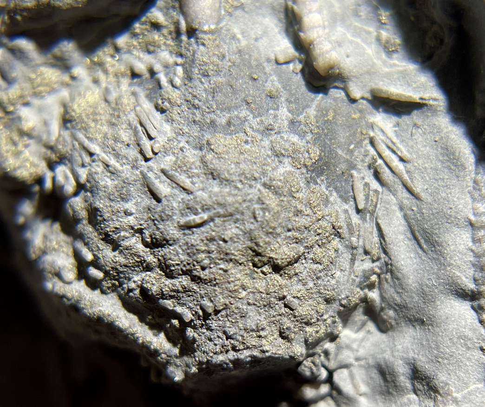
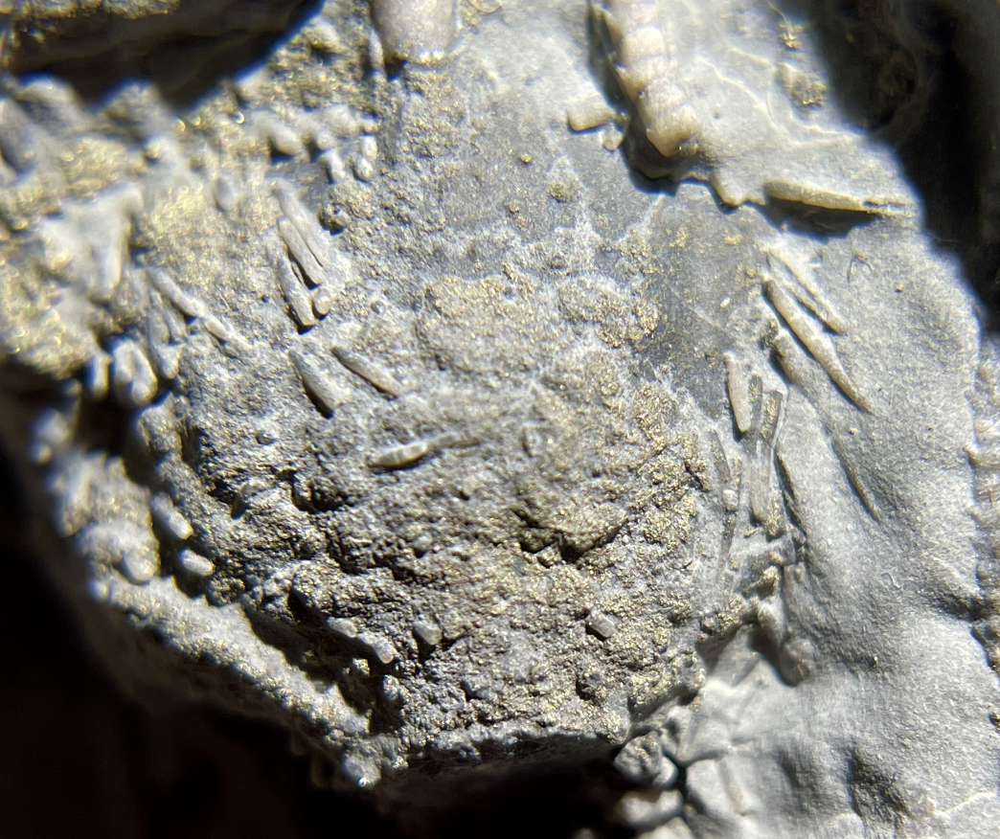

Arthroacantha carpenteri
• Devonian
• Arkona Formation
• Arkona, Ontario, Canada
Size: 12 cm across the arms
While not perfect, this is nevertheless a beautiful specimen that shows a parasitic copraphagous (a.k.a. "poop-eating") gastropod perched on the tegmen, as well as the very fine, needle-like calyx spines that are often lost during preservation or preparation.
 
